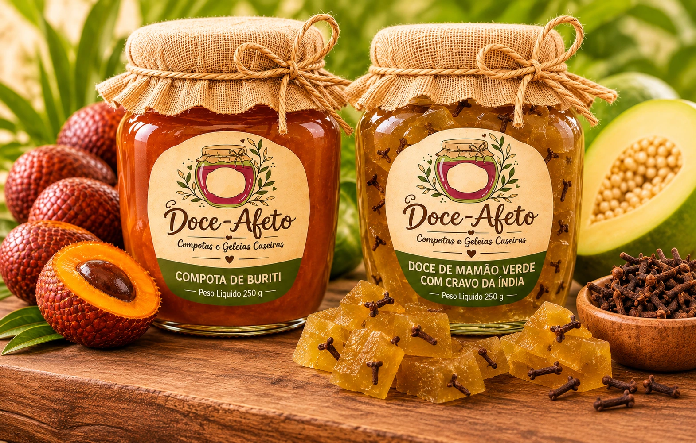
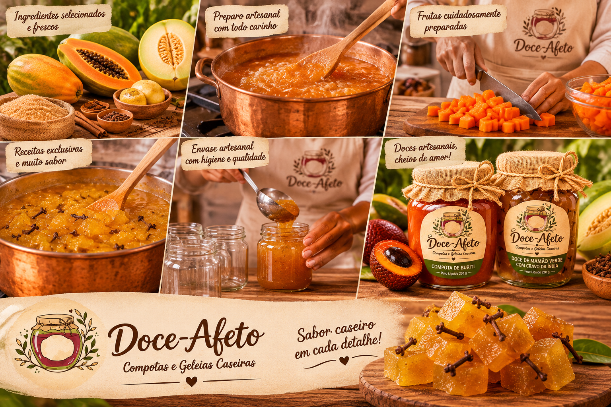

doce afeto
doce afetoUm toque de taperebá
Experimente a geleia com pão de fermentação natural, queijo branco ou tapioca quentinha.
Compotas e geleias caseiras feitas em pequenos lotes com frutas regionais. Receitas simples, sabor autêntico e um pedacinho da Amazônia para acompanhar seu café ou presentear.

Frutas regionais preparadas com cuidado e sem pressa. Escolha seus sabores favoritos. Pix tem 5% de desconto.

A Doce Afeto transforma frutas regionais em compotas e geleias caseiras, preparadas em pequenos lotes. Valorizamos os sabores da Amazônia e o conhecimento de quem cultiva e colhe esses ingredientes.
Cada pote é feito com cuidado, respeitando o sabor natural da fruta e as receitas de família. Um jeito simples de levar a riqueza da nossa região para o café da manhã, a sobremesa ou um presente especial.
Ideias simples para combinar sabores regionais no dia a dia.
Experimente a geleia com pão de fermentação natural, queijo branco ou tapioca quentinha.
Misture uma colher de geleia com limão e use como acompanhamento para legumes assados.
Use utensílios limpos e siga as orientações de conservação indicadas no rótulo do produto.
Conteúdo demonstrativo; consulte sempre as instruções reais do rótulo.
Crie sua conta de demonstração e conheça o cupom de boas-vindas AFETO10.
Precisa de ajuda com uma encomenda especial? Fale com a gente pelo WhatsApp ou e-mail. Respondemos em horário comercial.
Fale com a genteInforme o CEP e o endereço no checkout para consultar o frete demonstrativo: R$ 12 na zona urbana de Rio Branco, R$ 20 na zona rural e R$ 30 em Bujari, Senador Guiomard, Porto Acre, Plácido de Castro, Sena Madureira e Capixaba. Pedidos a partir de R$ 180 têm frete grátis. Não realizamos entregas para outros estados. Os potes são embalados para transporte seguro.
Esta versão acadêmica simula o checkout. Em uma operação real, Pix, cartões e carteiras digitais seriam processados por um provedor como Mercado Pago, em ambiente seguro, sem armazenar dados de cartão neste site.
Em compras online, você pode exercer o direito de arrependimento no prazo legal de 7 dias corridos, conforme o Código de Defesa do Consumidor e o Decreto 7.962/2013. Entre em contato para solicitar orientação. Produtos perecíveis também seguem as regras sanitárias e de consumo aplicáveis.
Na operação real, após a confirmação do pagamento, os dados do pedido seriam enviados ao sistema fiscal integrado para emissão da NF-e/NFS-e e envio ao cliente. Nesta demonstração não há emissão fiscal.